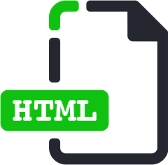

Html icon by Ravindra Kalkani
The following steps include instructions for Linux computers, and for Linux in a container, i.e. the Linux development environment on a Chromebook, or Windows Subsystem for Linux on a Windows PC. If you're using a fully-fledged Linux distribution installed on your computer, then skip to the next paragraph, just below ... however, if you're using a Chromebook or a Windows PC, please read on:
Chromebook: it is assumed that you have the Linux development environment installed.
Windows PC: it is assumed that you have the Windows Subsystem for Linux installed.
If you need help with either of those installations, please refer to my other Codelabs before continuing.
If you're interested in authoring more than one codelab, it would be a good idea to consider a landing page. The same "Googlers" that maintain the CLaaT project, have a host of other tools available on GitHub for this very purpose, located in the GoogleCodelabs/Tools repository. Please read up to and including the note just below, before checking out the Tools repo on GitHub.
If you look in the site sub-folder, you'll see that this is titled "Codelabs Site" and is described as "A site for hosting codelabs content" ... in other words, a landing page.
Unless you actually intend to host on GCS, the use of the terms site and hosting might be a little misleading in this case, because you will have to work out where you'd like to actually host/publish your website. Some possibilities include:
Where the CLaaT tool can easily export and serve a single codelab (as you may have done already), the tools under Codelabs Site can do all that, plus much more.
One of those additional features is the ability for you to create/update a landing page after you run the export command on one or more codelabs.
Instead of running claat serve in the how-to-write-a-codelab folder (for example), you would run gulp serve ... (with options) in the Projects folder (the parent folder to how-to-write-a-codelab).
What is Gulp? Gulp is a toolkit to automate/enhance workflows. In our case, that workflow is defined in the |
Alternative forms of the gulp serve command are gulp serve:dist (as in distribution) and gulp dist ... where the serve:dist option would serve a completely compiled and minified (production) version, and the dist option does the same, but without starting a web server instance.
Notes:
serve option by itself creates a build folder under site which contains everything that you would potentially publish to your codelabs website, including the landing page ... think testingdist option creates a dist folder containing a completely compiled and minified version ... think productionHopefully, all the claat this and gulp that isn't too confusing. If it seems like it is, don't worry too much ... you'll gain a better understanding by actually using the tools
Get the zipped archive by clicking this
Either way, both methods result in the exact-same file.
Locate the downloaded .zip file in your file manager application, then extract its contents into the Projects folder that contains your how-to-write-a-codelab folder, for example.
Now go to the Projects folder in your file manager, and explore the top-level directories under tools-main ... you should see something like this:
Home
|— Projects
|—|— how-to-write-a-codelab
|—|—|— img
|—|— tools-main
|—|—|— claat
|—|—|— codelab-elements
|—|—|— sample
|—|—|— site
|—|—|— ...
Note the presence of the claat folder, which is the source-code for the CLaaT tool program file.
In addition to the already installed Go and CLaaT software, you will need Node.js (v10 or greater req'd) + NPM, if you want to create a landing page.
Node.js is a platform built on Chrome's JavaScript runtime for easily building fast, scalable network applications. Node.js uses an event-driven, non-blocking I/O model.
NPM is the package manager for the Node JavaScript platform. It puts modules in place so that node can find them, and manages dependency conflicts intelligently
Please follow the instructions under the heading Installation Instructions (DEB) on this GitHub page: NodeSource Binary Distributions ... these instructions have been tested, and are working as of January 2025. There is no need to install npm separately, as it's included
Start by checking your distro's repos for Node.js availability/version number:
apt-cache policy nodejs
If the correct version is available (v10+) then install using this command:
sudo apt update && sudo apt install nodejs
Alternatively, you can install it directly from the Node.js website
If nodejs was available in your repos, the npm package should be as well:
sudo apt install npm
Alternatively, install NPM from Node.js website, using the link above
node -v
npm -v
Open your terminal in (or cd into) the site folder and run these two commands, which will set up CLaaT to work alongside Gulp:
npm install npm install gulp-cli
Also in the terminal, create a new folder under site ... this is where you'll store your codelabs:
mkdir codelabs
Now move our original how-to-write-a-codelab folder into the codelabs folder, as follows (note that the trailing slash is important):
mv ../../how-to-write-a-codelab codelabs/
Your folder hierarchy should now look similar to this:
Home
|— Projects
|—|— tools-main
|—|—|— claat
|—|—|— codelab-elements
|—|—|— sample
|—|—|— site
|—|—|—|— app
|—|—|—|— codelabs
|—|—|—|—|— how-to-write-a-codelab
|—|—|—|—|—|— img
|—|—|—|— node_modules
|—|—|— ...
Notes:
claat and/or gulp commands will be run from within the site or codelabs directoriesIf you have another hosting solution in mind, just ignore the mention of GCS above.
The same principles and procedures still apply for creating your own landing page.
Open a second terminal window, in the codelabs folder this time, and run this command:
claat export 12ABC3DEFGHIJ456K7LMNOPQRS-TUVWXYZ890ABC1244 (do not copy)
If the export command was successful, you should receive a confirmation in the form:
ok how-to-write-a-codelab
Back in the original terminal window (in the site folder), run this command:
gulp serve --codelabs-dir=codelabs
Now for the defining moment ... as a result of running your gulp serve ... command, you should see a message saying Webserver started at http://localhost:8000 (the default port).
Some terminal applications will allow you to open a hyperlink from within the terminal ... you may have to press the Ctrl key while you click the link. Otherwise, just copy/paste the hyperlink into a new browser tab
When you are nearly ready to publish your final HTML content to your chosen host platform, it is recommended to run this command:
gulp serve:dist --codelabs-dir=codelabs
Note the addition of the dist parameter ... this will give you the completely compiled and minified (production) version.
When you are actually ready to publish, run the following command:
gulp dist --codelabs-dir=codelabs
Now that you've double-checked everything in the production version of your codelab(s), it's time to publish those files to your web host. The content that actually gets published is under the dist folder, which would have been created upon running the gulp dist ... command
$HOME/Projects/tools-main/site/dist/
If you intend to publish your codelab(s) to GitHub Pages, please refer my other Codelabs
Within your tools/site/app/styles folder, you'll find several .scss files ... the one we're interested in for this section is named _categories.scss ... open it in a plain-text editor, and peruse its contents.
You'll see there are already many "default" categories, as defined by the good people at Google. However, if you want to add your own, each category needs to have these three parameters:
Try adding your own category at the end of the file, to match the my-first-docs-codelab ... you'll need the Category from that codelab that you added at the top of the file (the default in the template was codelabs)
@include codelab-card([codelabs], #FF0000, 'codelabs.png');Our example contains the following parameters:
Category: | codelabs | Must be lower-case |
Color: | #FF0000 | (can be pre-defined) |
Icon: | codelabs.png | file in |
Notes:
_categories.scss file, colors can be pre-defined using the format $color-name: #FF0000; and referenced using $color-name instead of its hex valuetools/site/app/images/icons folderWithin the codelab tools files, there are already two views, located in the default and vslive folders, under tools/site/app/views.
The default folder contains a "template" that can be customized to a certain degree, and is used for your actual landing page. This folder contains two files ... index.html and view.json.
These two files are based on Polymer, which uses variables provided by both the contents of the view.json file, and the output generated by the gulp command.
Within the vslive sub-folder, you'll find two different files: view.json and vslive-logo.jpg ...
The logo file is self-explanatory, but here are the contents of the view.json file:
{
"title": "Visual Studio Live",
"description": "Come learn about Google Cloud Platform by completing codelabs and coding challenges! The following codelabs will step you through using different parts of Google Cloud Platform. These challenges cover a range of topics such as Compute Engine, App Engine, Kubernetes, Cloud Shell. Go to https://g.co/codelabs/vslive to find more codelabs you can try at home.",
"logoUrl": "/vslive/vslive-logo.jpg",
"tags": ["vslive"],
"exclude": [
".*-about$",
"^lang-.*"
]
}There are many more keywords that can be used. Please refer to the original README file under Views
Export your Google Docs codelab.doc as HTML to your codelabs folder:
codelabs $ claat export YOUR_DOCUMENT_ID_123After exporting, start a Web server and open ./index.html in a New tab:
how-to-write-a-codelab $ claat serveAfter exporting, start a Web server with landing page as /index.html:
codelabs $ gulp serve --codelabs-dir=codelabsStart a Web server to test a compiled and minified version for publishing:
site $ gulp serve:dist --codelabs-dir=codelabsTo create the production version before publishing, but without the Web server:
site $ gulp dist --codelabs-dir=codelabsFor further info, check out the official GitHub repo:
For codelab hosting ideas, check out these links:
A few times in this guide, there has been mention of creating a script to help automate the gulp build/distribution process.
There is a sample script available for download, within the repo for the Publish your codelabs to GitHub codelab ... please refer to my other Codelabs for context (the script is mentioned in the Initialize Local Repo section)